10 가설검정
10.1 가설검정의 이론
10.1.1 통계적 가설과 검정통계량
표본을 분석하여 모집단의 특성을 규명하는 통계적 추론 방법은 추정(estimation)과 가설검정(hypothesis testing)
추정은 표본으로부터 구해진 통계량을 사용하여 모수의 특성을 규명하는 것
가설검정은 모집단(모수)에 대한 어떠한 가설을 설정하고 그 모집단으로부터 추출한 표본을 분석함으로써 그 가설의 타당성 여부를 결정하는 것
예를 들어 어떤 건전지 회사에서 생산하는 건전지의 평균수명 \(\mu\)는 \(1,200\)시간으로 알려져 있다고 할 때, 이 회사에서는 최근 새로운 기술을 도입하여 건전지의 평균수명이 \(1,200\)시간에서 \(1,500\)시간으로 연장되었다고 주장한다.
이때 우리의 관심은 \(\mu\)가 가질 수 있는 모든 범위 \((0, \infty)\)가 아니라 어떤 구체적인 값 \(\mu=1200\) 또는 \(\mu=1500\) 임
이와 같이 모수에 대한 두 개의 가설을 설정한 후 표본을 통해 어떤 것이 옳은가에 대한 판단 기준을 제공하는 절차를 가설검정이라고 함
통계적 가설과 가설검정 통계적 가설이란 단일 또는 여러 모집단에 대한 주장이고, 가설검정이란 표본을 관찰하여 가설을 채택 또는 기각의 결정을 내리는 분석방법이다.
가설은 크게 두 가지로 분류되며, 연구과정에서 검정의 대상이 되는 가설인 귀무가설(null hypothesis)과 귀무가설이 받아들여질 수 없을 때 대신 받아들여지는 가설로서 실험자가 주장하는 바를 내용으로 하는 가설인 대립가설(alternative hypothesis)이 있음
귀무가설과 대립가설은 각각 \(H_0\)와 \(H_1\)(또는 \(H_a\))으로 표시
가설검정을 수행 할 시 관심 있는 가설은 귀무가설이 아니라 대립가설이고 대립가설이 참이라는 확실한 근거가 없으면 귀무가설을 채택함
이는 귀무가설이 채택되었다고 하더라도 귀무가설이 옳다고 주장할 수 없음을 의미하며, 따라서 "귀무가설이 채택되었다"는 표현 대신에 "귀무가설을 기각하지 못한다"는 표현을 사용하기도 함
가설의 종류
귀무가설(\(H_0\))
기존에 알려진 사실을 간단하고 구체적으로 표현한 가설이다.
예) \(\theta=\theta_0\)(상수), \(\theta_1=\theta_2\)
대립가설(\(H_1\))
실험자가 사실임을 입증하고자 하는 가설로서 귀무가설로 지정되지 않은 모든 경우를 포괄하여 설정된다.
예) \(\theta>\theta_0\), \(\theta<\theta_0\), \(\theta \ne \theta_0\), \(\theta_1>\theta_2\), \(\theta_1<\theta_2\), \(\theta_1\ne \theta_2\)
- 설정된 가설을 검정하기 위해서는 모집단에서 추출된 표본 정보에 따라 그 채택 여부가 결정되는데, 이때 표본을 사용하여 검정에 사용되는 통계량을 검정통계량(test statistic)이라고 함
10.1.2 제1종 오류와 제2종 오류
검정통계량 두 가설 중 하나를 결정하기 위해 사용되는 통계량으로서, 일반적으로 모평균 \(\mu\)와 모분산 \(\sigma^2\)에 대한 검정통계량으로서 각각 표본평균 \(\bar{X}\)(또는 \(\sum_{i=1}^nX_i\))와 표본분산 \(S^2\)을 사용한다. 특히 이때의 검정통계량의 분포는 항상 \(H_0\)하에서 정의 모수값에 의해 결정된다.
가설검정은 표본을 사용하여 얻어진 통계량을 기초로 해서 모집단의 특성을 구하려는 것이므로 표본이 어떻게 선택되느냐에 따라 잘못된 결론을 내릴 수도 있으며 이는 오류로 표현됨
가설검정에서의 오류는 두 가지로 표현되며, 그 중 하나는 귀무가설이 참 임에도 불구하고 귀무가설을 기각하는 오류로써 이를 제1종 오류(type I error)라 하고 제1종 오류를 범할 확률을 \(\alpha\)로 표시함
가설검정시 제1종 오류를 범할 확률의 허용한계를 유의수준(significance level)이라 함
또 다른 가설로써 귀무가설이 틀림에도 불구하고 귀무가설을 채택하는 오류인데 이를 제2종 오류(type II error)라고 하며 제2종 오류를 범할 확률을 \(\beta\)라고 함
통계적 가설검정시 발생 가능한 오류
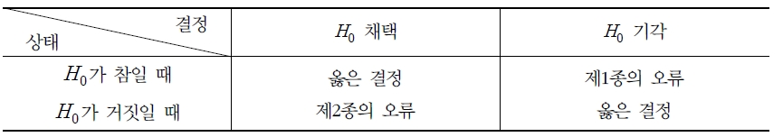
\(\alpha\)와 \(\beta\)
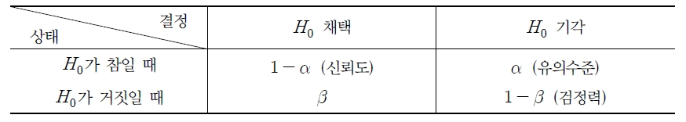
\(\alpha\)와 \(\beta\)의 정의 \(\alpha=P(\text{제1종의 오류})=P(H_0\text{를 기각}|H_0\text{이 사실})\)
\(\beta=P(\text{제2종의 오류})=P(H_0\text{를 채택}|H_1\text{이 사실})\)
\(\alpha\)와 \(\beta\)는 모두 오류를 범할 확률이므로 작을수록 좋음
예) 건전지의 수명에 대한 가설을 다음과 같이 설정했다고 가정하자. \[H_0 : \mu=1200\hskip10pt vs. \hskip10pt H_1 : \mu =1500\]
이 가설을 검정하기 위해 \(N(\mu, 20^2)\)을 따르는 모집단에서 \(n\)개의 확률표본을 추출했다고 하고 이 표본으로부터 얻은 표본평균 \(\bar{X}\)가 \(\bar{X}\ge 1350\)을 만족하면 \(H_0\)를 기각한다고 가정함
이때 표본평균 \(\bar{X}\)의 분포는 \(N(\mu, 20^2/n)\)이 되므로 귀무가설 \(H_0\)이 사실일때 \(\bar{X}\)의 분포와 \(H_1\)이 사실일 때 \(\bar{X}\)의 분포는 각각 \(N(1200, 20^2/n)\)와 \(N(1500,20^2/n)\)이 됨
\(\alpha\)와 \(\beta\)
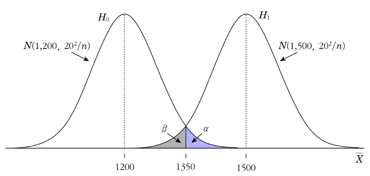
두 오류의 확률 \(\alpha\)와 \(\beta\)의 관계
주어진 표본크기 \(n\)하에서는 \(\alpha\)와 \(\beta\)는 동시에 줄일 수 없다. 즉, \(\alpha\)와 \(\beta\)는 서로 반비례한다.
\(\alpha\)와 \(\beta\)를 동시에 줄이려면 표본크기 \(n\)을 증가시키면 된다.
10.1.3 검정력
귀무가설이 옮음에도 불구하고 이를 기각할 확률이 \(\alpha\)이므로 귀무가설이 옳을 때 이 가설을 채택할 확률은 \(1-\alpha\)가 됨
마찬가지로 귀무가설이 옳지 않음에도 불구하고 이를 채택할 확률이 \(\beta\)이므로 귀무가설이 옳지 않을 때 이를 기각할 확률은 \(1-\beta\)가 됨
따라서 \(1-\alpha\)와 \(1-\beta\)를 크게 하면 좋은 의사결정을 할 확률이 커지게 됨
이때 \(1-\beta\)를 검정력(power of test)라고 함
검정력 대립가설 \(H_1\)이 옳을 때 귀무가설 \(H_0\)를 기각할 확률을 의미하고, 이는 다음과 같이 표시된다. \[1-\beta=P(H_0\text{를 기각}|H_1\text{이 사실})\]
검정력\((1-\beta)\)
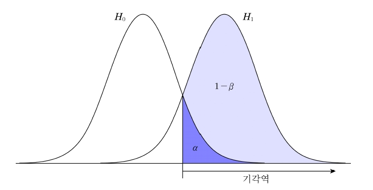
10.1.4 임계값
건전지 회사의 예에서 표본평균 \(\bar{X}\)가 \(\bar{X}\ge 1350\)을 만족하면 귀무가설을 기각한다고 가정하였음. 이때의 \(1,350\)은 귀무가설 \(H_0\)를 채택할 것인지 기각할 것인지를 판정하는 기준이 되는 값이 되며, 이 값을 임계값(critical value)이라고 함
임계값은 유의수준 \(\alpha\), 표본크기 \(n\), 검정통계량의 분포에 의해 결정 됨
임계값 임계값은 주어진 유의수준 \(\alpha\)하에서 귀무가설 \(H_0\)의 채택 또는 기각 여부를 판정하여 주는 기준이 되는 값이다.
건전지 회사의 예에서 유의수준이 \(\alpha=0.05\)이고 표본크기가 \(n=100\)이라고 할 때 모평균 \(\mu\)에 대한 검정에서 주어진 \(\alpha\)와 표본크기를 만족하는 임계값 \(c\)를 구해보면 다음과 같음
우선 \(\alpha=P(\bar{X}\ge c |\mu=1200)\)이므로 다음의 식이 성립함 \[\begin{aligned} 0.05&=P(\bar{X}\ge c |\mu=1200)\\ &=P(\frac{\bar{X}-1200}{20/\sqrt{100}}\ge \frac{c-1200}{20\sqrt{100}})\\ &=P(Z\ge \frac{c-1200}{2})\end{aligned}\]
따라서 \((c-1200)/2=1.64\)이므로 임계값은 \(c=1203.28\)이 됨
임계값을 기준으로 가설검정의 채택역(acceptance region)과 기각역(rejection region)을 정의함
채택역과 기각역 1. 채택역 : 귀무가설 \(H_0\)를 받아들이는 영역이다. 2. 기각역 : 귀무가설 \(H_0\)를 받아들이지 않는 영역이다.
채택역과 기각역은 가설의 형태에 따라 달라지며, 모수를 \(\theta\)라 하고 모수의 특정한 값을 \(\theta_0\)라 하면 가설은 아래와 같이 설정 됨
검정방법은 대립가설 \(H_1\)의 형태에 따라 단측검정(one-tailed test)과 양측검정(two-tailed test)으로 구분되고 단측검정은 우측검정(right-tailed test)과 좌측검정(left-tailed test)으로 나누어짐
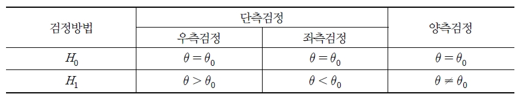
검정통계랴을 \(T\)라고 하고, 임계값을 \(c\)라고 할 때 검정방법에 따른 기각역의 형태는 일반적으로 다음과 같음
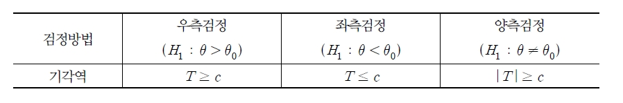
10.1.5 가설검정의 절차
가설검정의 절차
가설설정
분석하고자 하는 목적에 따라 귀무가설 \(H_0\)와 대립가설 \(H_1\)을 설정한다.
유의수준 \(\alpha\)와 표본크기 \(n\) 결정
검정통계량과 분포 결정
귀무가설 하에서 적절한 검정통계량 \(T(X_1, \ldots, X_n)\)과 \(H_0\)하에서의 \(T\)의 분포를 결정한다.
임계값 및 기각역 결정
주어진 유의수준 \(\alpha\)와 표본크기 \(n\)에 따라 임계값 \(c\)를 결정하고 \(H_1\)의 형태에 따라 기각역 \(C\)를 결정한다.
검정통계량 계산
확률표본의 관측값을 이용하여 검정통계량의 값 \(t\)를 계산한다.
의사결정
\(t\in C\)이면 \(H_0\)를 기각하고 \(t\not\in C\)이면 \(H_0\)를 채택한다.
10.1.6 \(P\)-값의 이용
가설검정에서 \(\alpha\)를 고정시키고 \(1-\beta\)를 최대화(\(\beta\)를 최소화) 하려고 함
우리는 오래 전부터 \(\alpha\)의 값을 보통 \(0.05\) 또는 \(0.01\)로 정하고 이에 대한 기각역을 사용해 왔음. 따라서 가설검정의 결론은 \(\alpha\)를 얼마로 하느냐에 따라 달라짐
예를 들어 어떤 고등학교 학생들의 평균 수학점수가 \(71\)점이 안될 것이라는 주장이 옳은지 검정하기 위해 \(400\)명의 표본을 추출하여 평균을 구해보니 \(\bar{x}=68\)이고 이 고등학교 학생들의 수학점수의 표준편차, \(\sigma=35\)라고 알려져 있다고 가정하자.
이때의 가설은 다음과 같음 \[H_0 : \mu=71\] \[H_1 : \mu<71\]
검정통계량 \(\frac{\bar{X}-\mu}{s/\sqrt{n}}\) 이 중심극한정리에 의해 표준정규분포를 따르므로 귀무가설 하에서의 \(z_0\)값을 구하면 다음과 같음 \[z_0=\frac{68-71}{35/\sqrt{400}}=-1.71\]
여기서 만약 \(\alpha=0.05\)라고 했을 때의 임계값(\(c; \alpha=P(Z<c)\))을 표준정규분포표를 이용하여 구해 보면 \(-1.645\)가 되고 \(\alpha=0.01\)일 경우에는 \(-2.33\)이 됨
따라서 \(\alpha=0.05\)일 때는 \(-1.714\)이 \(-1.645\)보다 작으므로 기각역에 속하게 되어 \(H_0\)를 기각하게 됨
반면에 \(\alpha=0.01\)일 때는 \(-1.71\)이 \(-2.33\)보다 크므로 기각역에 속하지 않으므로 \(H_0\)를 기각하지 못하게 됨
이와 같이 미리 정해진 값에 따라 결론이 달라질 수 있기 때문에 가설검정을 하는 사람이 가설검정의 맨 마지막 단계에서 \(\alpha\)값을 스스로 결정하여 결론을 내릴 수 있게 하는 방법이 \(P\)-값(\(P\)-value)에 의한 가설검정임
\(P\)-값 \(P\)-값이란 귀무가설 \(H_0\)가 참일 때 표본에서 얻어진 결과가 귀무가설을 기각하게 하는 확률(\(H_0\)의 신빙성 측정)이다. 즉, 표본의 결과가 귀무가설 하의 모집단에서 추출되었을 때의 확률이고 \(H_0\)가 사실일 때 관측된 검정통계량의 값보다 더 귀무가설을 기각하게 하는 영역의 꼬리부분의 확률값이다. \(P\)-값이 \(\alpha\)보다 작거나 같으면 \(H_0\)를 기각하고, \(P\)-값이 \(\alpha\)보다 크면 \(H_0\)를 기각하지 못하게 된다.
만약 \(T=t(X_1,\ldots, X_n)\)이 검정통계량이고 관측된 검정통계량의 값이 \(t(x_1,\ldots, x_n)=t_0\) 이라고 하자. \(t_0\)가 작은 값일 때 \(H_0\)를 기각한다면 \(P\)-값은 다음과 같음 \[P-\text{값}=P(T\le t_0; H_0)\]
위의 예에서 \(P\)-값은 \(\alpha\)와 상관없이 항상 \(P(Z\le -1.710)=0.0436\)이 되므로 \(\alpha=0.05\)일 때는 \(P\)-값\(<\alpha\)이 되어 \(H_0\)를 기각하게 되고 \(\alpha=0.01\)일 때는 \(P\)-값\(>\alpha\)가 되어 \(H_0\)를 기각하지 못함
수학점수의 검정에서의 \(P\)-값(음영부분)
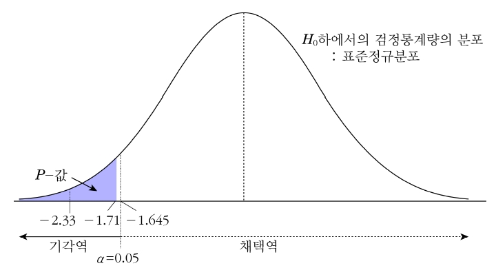
10.1.7 구간추정과 가설검정의 관계
구간추정과 가설검정은 모두 표본을 분석하여 모집단의 특성을 규명하는 통계적 추론 방법임
구간추정과 가설검정의 차이를 알아보기 위해 모분산 \(\sigma^2\)이 알려져 있다고 할 때 모평균 \(\mu\)에 대한 구간추정과 가설검정에 대한 예를 들어보자.
8.2절 구간추정에서 \(Z=\frac{\bar{X}-\mu}{\sigma/\sqrt{n}}\)이 표준정규분포를 따르는 것을 이용하여 \(\mu\)에 대한 \(100(1-\alpha)\%\) 신뢰구간을 추정하였음
마찬가지로 유의수준 \(\alpha\)에서 \(H_0 : \mu=\mu_0 \hskip5pt vs. \hskip5pt H_1 : \mu \ne \mu_0\)를 검정한다는 것은 \(\mu\)에 대한 \(100(1-\alpha)\%\) 신뢰구간의 추정에서 이 신뢰구간 내에 \(\mu_0\)가 포함되어 있지 않으면 \(H_0\)를 기각한다는 것과 동일함
즉, \(\mu_0\)가 신뢰구간 내에 있으면 귀무가설은 기각되지 않는다는 것을 의미함
10.1.8 구간추정과 가설검정의 관계
유의수준 \(\alpha\)에서 측정된 \(\bar{x}\)로 \(H_0\)를 기각시키지 못하는 것은 \(\bar{X}\)가 \(100(1-\alpha)\%\)의 확률로 \(-z_{\alpha/2}\le \frac{\bar{X}-\mu_0}{\sigma/\sqrt{n}}\le z_{\alpha/2}\)을 만족한다는 것을 의미하며 \[\bar{X}-z_{\alpha/2}\frac{\sigma}{\sqrt{n}}\le \mu_0 \le \bar{X}+z_{\alpha/2}\frac{\sigma}{\sqrt{n}}\] 와 동일함
따라서 구간추정에 있어서의 신뢰구간과 양측 가설검정에서의 채택역은 같은 의미를 가지게 됨. 즉, 신뢰구간은 채택 가능한 귀무가설의 모수들의 집합으로 생각할 수 있음. 결국 통계적 추론에서의 구간추정과 가설검정은 서로의 보는 관점이 다를 뿐이지 별개의 것이 아님
10.2 단일모평균의 검정
10.2.1 모분산을 알 경우
분산 \(\sigma^2\)이 알려져 있고 정규분포로부터 추출된 확률표본을 \(X_1,\ldots, X_n\)라고 하고 다음 가설을 검정한다고 하자. \[H_0 : \mu=\mu_0 \hskip5pt vs. \hskip5pt H_1 : \mu\ne \mu_0\]
이것은 양측검정에 해당되며 \(\mu\)의 검정통계량은 단일모평균의 구간추정과 같이 표본평균 \(\bar{X}\)가 되고 \(\bar{X}\)가 \(N(\mu, \sigma^2/n)\)을 따르는 것을 이용함. 단지 가설검정에서 귀무가설의 채택여부는 \(H_0 : \mu=\mu_0\) 하에서 생각하게 되므로 \(\bar{X}\)는 \(N(\mu_0, \sigma^2/n)\)을 따르게 됨
\(Z_0=\frac{\bar{X}-\mu_0}{\sigma/\sqrt{n}}\)는 표준정규분포 \(N(0,1)\)을 따르므로 다음 관계식이 성립함 \[P(-z_{\alpha/2}\le \frac{\bar{X}-\mu_0}{\sigma/\sqrt{n}}\le z_{\alpha/2})=1-\alpha\]
위의 식의 의미는 \(-z_{\alpha/2}\le\sqrt{n}(\bar{x}-\mu_o)/\sigma\le z_{\alpha/2}\)이면 \(H_0\)를 채택(\(H_0\)를 기각하지 못함)하고 \(\sqrt{n}(\bar{x}-\mu_o)/\sigma\ge z_{\alpha/2}\) 또는 \(\sqrt{n}(\bar{x}-\mu_o)/\sigma\le -z_{\alpha/2}\)를 만족하면 \(H_0\)를 기각함
어느 초등학교 1학년 학생들의 키의 평균은 \(112cm\)이고, 표준편차는 \(12cm\)인 정규분포를 따른다고 한다. 이 사실을 확인하기 위해 \(16\)명을 무작위로 추출하여 키를 측정한 결과 평균 \(114.65\)이었다고 한다. 유의수준 \(5\%\)로 이 학교 1학년 학생들의 키의 평균이 \(112cm\)인지를 검정하라.
(풀이)
귀무가설과 대립가설 설정: \(H_0 : \mu=112, \hskip5pt vs. \hskip5pt H_1 : \mu\ne 112\)
유의수준 설정: \(\alpha=0.05\)
기각역을 설정: \(z_{\alpha}=z_{0.025}=1.96\), \(-z_{0.025}=-1.96\)
기각영역: \(Z\ge 1.96\) 또는 \(Z\le -1.96\)
검정통계량값 계산: \(\bar{x}=114.654\), \(\mu_0=112\), \(\sigma=12\), \(n=16\), \(z_0=\frac{114.65-112}{12 /\sqrt{16}}=0.883\)
\(z_0=0.883\)은 기각역에 속하지 않으므로 유의수준 \(\alpha=0.05\)에서 귀무가설 \(H_0\)를 기각하지 못한다. 따라서 이 학교 학생의 평균키는 \(112cm\)이라고 말할 수 다.
\(P\)-값 계산: \(P\)-값=\(2\times P(Z\ge 0.883)=2(1-0.8106)=0.3788\)
따라서 \(P\)-값\(>\alpha\)이므로 귀무가설 \(H_0\)를 기각하지 못한다.
\(P\)-값
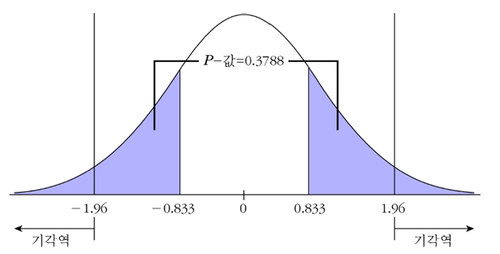
지금까지는 양측검정의 경우를 살펴보았는데 단측검정의 경우에도 마찬가지임. 다만 기각역이 표준정규분포의 한쪽에만 위치하는 것만 다름
예를 들어 다음 가설을 검정하는 경우를 생각해 보자. \[H_0 : \mu=\mu_0 \hskip5pt vs. \hskip5pt H_1 : \mu>\mu_0\]
이때는 기각역이 오른쪽에 위치하게 되므로 \(z\ge z_{\alpha}\)일 때 \(H_0\)를 기각함
만일 대립가설이 \(H_1 : \mu<\mu_0\)이면 기각역은 왼쪽에 위치하며 \(z\le -z_{\alpha}\)일 때 \(H_0\)를 기각함
이 건전지는 건전지의 수명이 \(12\)시간 이상임을 보증한다고 선전하고 있다. 이를 확인하기 위해 \(35\)개의 건전지를 검사해 본 결과 평균은 \(12.7\), 모분산은 \(3\)이었다고 한다. 이 건전지의 선전을 믿을 수 있는지를 유의수준 \(5\%\)에서 검정하라.
(풀이)
귀무가설과 대립가설 설정: \(H_0 : \mu=12, \hskip5pt vs. \hskip5pt H_1 : \mu > 12\)
유의수준 설정: \(\alpha=0.05\)
기각역을 설정: \(z_{\alpha}=z_{0.05}=1.645\)
기각영역: \(Z\ge 1.645\)
검정통계량값 계산: \(\bar{x}=12.7\), \(\mu_0=12\), \(\sigma^2=3\), \(n=35\), \(z_0=\frac{12.7-12}{\sqrt{3/35}}=2.391\)
\(z_0=2.391\)은 기각역에 속하므로 유의수준 \(\alpha=0.05\)에서 귀무가설 \(H_0\)를 기각한다. 따라서 이 건전지의 평균수명이 \(12\)시간이라는 선전은 과대광고가 아님을 알 수 있다. 즉, 이 건전지의 수명은 \(12\)시간 이상이다.
\(P\)-값 계산: \(P\)-값=\(P(Z\ge 2.391)=0.0084\)
따라서 \(P\)-값\(<\alpha\)이므로 귀무가설 \(H_0\)를 기각한다.
\(P\)-값
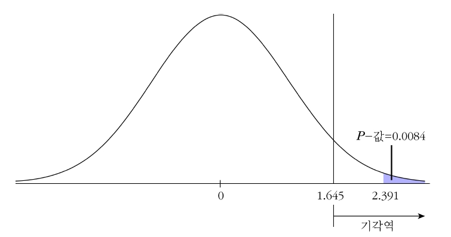
10.2.2 모분산을 모를 경우
모분산 \(\sigma^2\)을 모르는 경우 모평균 \(\mu\)를 검정하는 경우 구간추정의 경우와 마찬가지로 \(t\)분포가 이용됨. \(t\)분포는 표준정규분포처럼 \(0\)을 중심으로 대칭인 분포이므로 양측검정의 기각역은 바로 앞에서 설명한 \(\sigma^2\)를 아는 경우와 유사함
따라서 양측가설 \(H_0 : \mu=\mu_0, \hskip5pt vs. \hskip5pt H_1 : \mu\ne\mu_0\)에서 \(\sigma^2\)을 모르는 경우 사용되는 검정통계량은 \(T=\frac{\bar{X}-\mu_0}{S/\sqrt{n}}\)이 되고 유의수준 \(\alpha\)에서 \(T\)통계량의 값이 \(T\ge t_{(\alpha/2,n-1)}\) 또는 \(T\le -t_{(\alpha/2,n-1)}\)이면 \(H_0\)는 기각됨
단측검정일 경우는 \(H_1 : \mu>\mu_0\)일 때 기각역은 \(T\ge t_{(\alpha,n-1)}\)이 되고, \(H_1 : \mu<\mu_0\)일 때의 기각역은 \(T\le -t_{(\alpha,n-1)}\)이 됨
위와 같은 조건하에서 표본크기가 큰 경우는 모분산 \(\sigma^2\)을 모른다 할지라도 \(\bar{X}\)는 평균이 \(\mu\), 분산이 \(\sigma^2/n\)인 정규분포에 근사하여 모분산을 아는 경우와 마찬가지로 표준정규분포를 사용하여 가설을 검정할 수 있음
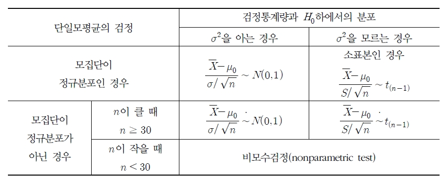
트럭용 차축을 공급하는 회사가 있다. 이 차축은 압력 실험에서 \(cm^2\)당 \(80,000\)파운드를 지탱해야 한다. 너무 강하면 생산비용이 엄청나게 소요되고 너무 약하면 고객의 불평으로 판매에 영향을 미친다. \(100\)개의 차축을 추출하여 강도(\(cm^2\)당)를 측정한 결과 \(\bar{x}=79,600\)파운드, \(s=4,000\)파운드이었다. 유의수준 \(5\%\)에서 모평균 \(\mu\)에 대한 가설을 검정하라.
(풀이)
귀무가설과 대립가설 설정: \(H_0 : \mu=80000, \hskip5pt vs. \hskip5pt H_1 : \mu \ne 80000\)
유의수준 설정: \(\alpha=0.05\)
기각역을 설정: \(t_{(\alpha/2,n-1)}=t_{(0.025,99)}=1.984\), \(-t_{(0.025,99)}=-1.984\)
기각영역: \(T\ge 1.984\) 또는 \(T\le -1.984\)
검정통계량값 계산: \(\bar{x}=79600\), \(\mu_0=80000\), \(\sigma=4000\), \(n=100\), \(t_0=\frac{79600-80000}{4000\sqrt{100}}=-1.0\)
\(t_0=-1.0\)은 기각역에 속하지 않으므로 유의수준 \(\alpha=0.05\)에서 귀무가설 \(H_0\)를 기각할 수 없다. 따라서 생산 공장에는 이상이 없다고 할 수 있다.
\(P\)-값 계산: \(P\)-값=\(2\times P(T\ge -1.0)=0.320\)
따라서 \(P\)-값\(>\alpha\)이므로 귀무가설 \(H_0\)를 기각할 수 없다.
10.3 두 모평균 차의 검정
10.3.1 독립적인 두 표본의 경우
1) 모분산 \(\sigma_1^2\)과 \(\sigma_2^2\)을 알 경우
서로 독립인 두 정규모집단 \(N(\mu_1,\sigma_1^2)\), \(N(\mu_2,\sigma_2^2)\)으로부터 표본크기가 \(n_1\)과 \(n_2\)인 확률표본을 \((X_1, \ldots, X_{n_1})\)과 \((Y_1,\ldots,Y_{n_2})\)를 추출했다면 두 모평균 차 \(\mu_1-\mu_2\)의 점추정량 \(\bar{X}-\bar{Y}\)의 분포는 평균이 \(\mu_1-\mu_2\), 분산이 \(\sigma_1^2/n_1+\sigma_2^2/n_2\)인 정규분포를 따름
두 모평균의 차이에 대한 귀무가설은 일반적으로 다음과 같이 나타낼 수 있음 \[H_0 : \mu_1-\mu_2=d_0 \text{(단, $d_0$는 상수)}\]
\(H_0\)하에서의 검정통계량: \[Z_0=\frac{(\bar{X}-\bar{Y})-d_0}{\sqrt{\sigma_1^2/n_1+\sigma_2^2/n_2}}\]
만약 \(H_1 : \mu_1-\mu_2\ne d_0\)라면 \(Z_0\ge z_{\alpha/2}\) 또는 \(Z_0\le-z_{\alpha/2}\)일 때 \(H_0\)를 기각하고, \(H_1 : \mu_1-\mu_2>d_0\)일 경우엔 \(Z_0\ge z_{\alpha}\)일 때 \(H_0\)를 기각
\(A\)사의 제품과 \(B\)사의 제품의 로트에서 각각 표본 \(10\)개와 \(12\)개를 독립적으로 추출하여 인장 강도를 측정한 결과 각각 \(\bar{x}=145kg/mm^2\), \(\bar{y}=138kg/mm^2\)이었다. 두 모집단은 표준편차가 각각 \(\sigma_1=5kg/mn^2\), \(\sigma_2=6kg/mm^2\)인 정규분포를 따른다고 한다. 두 회사 제품의 인장 강도의 모평균에 차이가 있다고 할 수 있는지에 대해 유의수준 \(1\%\)에서 검정하라.
(풀이)
귀무가설과 대립가설 설정: \(H_0 : \mu_1=\mu_2, \hskip5pt vs. \hskip5pt H_1 : \mu_1\ne\mu_2\)
유의수준 설정: \(\alpha=0.01\)
기각역을 설정: \(z_{0.005}=2.575\), \(-z_{0.005}=-2.575\)
기각영역: \(Z\ge 2.575\) 또는 \(Z\le -2.575\)
검정통계량값 계산: \(\bar{x}=145\), \(\bar{y}=138\), \(\sigma_1=5\), \(\sigma_2=6\), \(n_1=10\), \(n_2=12\), \(z_0=\frac{145-138}{\sqrt{5^2/10+6^2/12}}=2.985\)
\(z_0=2.985\)은 기각역에 속하므로 유의수준 \(\alpha=0.01\)에서 귀무가설 \(H_0\)를 기각한다. \(H_0\)를 기각하므로 두 회사의 제품에 차이가 있다고 할 수 있다.
\(P\)-값 계산: \(P\)-값=\(2\times P(Z\ge 2.985)=0.003\)
따라서 \(P\)-값\(<\alpha\)이므로 귀무가설 \(H_0\)를 기각한다.
2) 모분산 \(\sigma_1^2\)과 \(\sigma_2^2\)을 모를 경우
이번에는 모분산이 알려져 있지 않았을 경우에 대해 알아보자. 만일 이 경우에서 비록 모분산은 모르지만 모집단의 분포가 정규분포를 따르거나 표본크기가 적당히 큰 경우는 추정에서처럼 \(t\)분포가 이용됨
검정통계량은 추정과 마찬가지로 두 모분산이 서로 같다고 가정했을 경우(\(\sigma_1^2=\sigma_2^2=\sigma^2\))와 그렇지 않은 경우(\(\sigma_1^2\ne\sigma_2^2\))로 구분하여 사용됨
두 집단 간의 모평균에 대한 검정(\(H_0 : \mu_1-\mu_2=d_0 \hskip5pt vs. \hskip5pt H_1 : \mu_1-\mu_2\ne d_0\))을 한다고 하자. 먼저 서로 독립인 정규분포를 따르는 두 집단으로부터 각각 \(n_1\)개와 \(n_2\)개의 표본을 추출했을 경우 이를 간단히 기호로 표시하면 다음과 같음 \[X_1, \ldots, X_{n_1}\sim N(\mu_1 , \sigma_1^2)\] \[Y_1, \ldots, Y_{n_2}\sim N(\mu_2 , \sigma_2^2)\]
이 때 모집단의 모분산이 같다고 가정되는 경우 \(H_0\)하에서의 검정통계량은 다음과 같음 \[T_0=\frac{(\bar{X}-\bar{Y})-d_0}{S_p\sqrt{1/n_1+1/n_2}}\sim t_{(n_1+n_2-2)}\] 여기서 사용되는 \(S_p\)는 합동표준편차 \[S_p=\sqrt{\frac{(n_1-1)S_1^2+(n_2-1)S_2^2}{n_1+n_2-2}}\] 이고 \(S_1^2\)과 \(S_2^2\)은 각각 크기가 \(n_1\)과 \(n_2\)인 표본으로부터 구한 표본분산임
모분산이 같지 않다고 가정되는 경우 \(H_0\)하에서의 검정통계량은 다음과 같음 \[T_0=\frac{(\bar{X}-\bar{Y})-d_0}{\sqrt{S_1^2/n_1+S_2^2/n_2}}\sim t_{(\nu)}\] 여기서 자유도 \(\nu\)는 구간추정에서와 마찬가지로 새터스웨이트의 자유도를 이용함 \[\nu=\frac{\left(\frac{S_1^2}{n_1}+\frac{S_2^2}{n_2} \right) ^2}{\frac{(S_1^2/n_1)^2}{n_1-1}+\frac{(S_2^2/n_2)^2}{n_2-1}}\]
두 검정통계량은 모두 \(t\)분포를 따르며 양측 가설검정일 경우의 기각역은 \(T\ge t_{(\alpha/2,d.f)}\) 또는 \(T\le -t_{(\alpha/2,d.f)}\)이 되고, \(H_1 : \mu_1-\mu_2>d_0\)이면 \(T\ge t_{(\alpha,d.f)}\)이 기각역이 됨
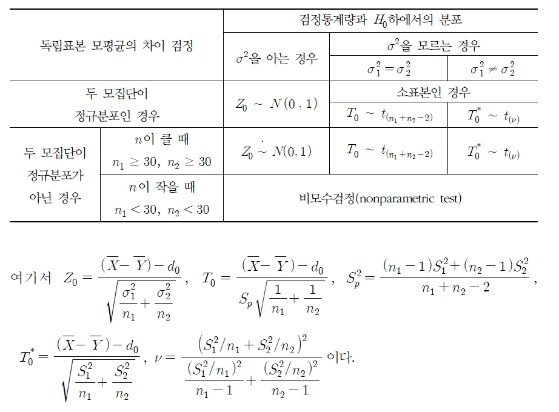
한 제조업체는 조립 공장에서 기존의 방법과 새로운 방법을 비교하려고한다. 작업자 \(9\)명씩 두 조로 나누어 두 가지 방법에 따른 조립시간을 측정한 결과 다음과 같은 자료를 얻었다. 조립시간은 대체로 정규분포를 따르며 두 방법에 의한 조립시간의 분산은 동일하다고 가정한다. 여기서 기존의 공정과 새로운 공정 사이의 조립시간에 차이가 있는지 없는지를 유의수준 \(5\%\)에서 가설을 검정하라.(단, \(1\): 기존의 공정, \(2\): 새로운 공정 이라고 하자)
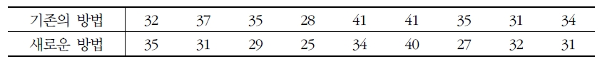
(풀이)
귀무가설과 대립가설 설정: \(H_0 : \mu_1=\mu_2, \hskip5pt vs. \hskip5pt H_1 : \mu_1\ne\mu_2\)
유의수준 설정: \(\alpha=0.05\)
기각역을 설정: \(t_{(0.025,16)}=2.12\), \(-t_{(0.025,16)}=-2.12\)
기각영역: \(T\ge 2.12\) 또는 \(T\le -2.12\)
검정통계량값 계산: \(\bar{x}=34.89\), \(\bar{y}=31.56\), \(s_1^2=18.86\), \(s_2^2=20.08\), \(n_1=9\), \(n_2=9\), \(s_p^2=19.445\), \(t_0=\frac{34.89-31.56}{4.4096\sqrt{1/9+1/9}}=1.6019\)
\(t_0=1.6019\)은 기각역에 속하지 않으므로 유의수준 \(\alpha=0.05\)에서 귀무가설 \(H_0\)를 기각할 수 없다. 따라서 기존의 공정과 새로운 공정의 조립 시간에 대해 차이가 있다는 뚜렷한 증거가 없다고 할 수 있다.
\(P\)-값 계산: \(P\)-값=\(2\times P(T\ge 1.6019)=0.1284\)
따라서 \(P\)-값\(>\alpha\)이므로 귀무가설 \(H_0\)를 기각할 수 없다.
10.3.2 대응표본
두 집단이 서로 독립이 아닐 때 두 모평균 차이에 대한 구간추정의 방법을 가설검정에 그대로 적용시키면 됨
\(n\)개의 차이 \(D_1,\ldots, D_n(D_i=X_i-Y_i)\)이 정규모집단으로부터의 추출된 확률표본이라 하고 모집단 차이 \(\Delta\)에 대한 귀무가설이 \(H_0 : \Delta=d_0\)라고 하면 계산된 검정통계량은 다음과 같이 주어지고, 이것은 자유도가 \(n-1\)인 \(t\)분포를 따름 \[T_0=\frac{\bar{D}-d_0}{S_d/\sqrt{n}}\sim t_{(n-1)}\] 여기서 \(S_d^2=\frac{1}{n-1}\sum_{i=1}^n(D_i-\bar{D})^2\), \(\bar{D}=\frac{1}{n}\sum_{i=1}^nD_i\)이고 이 검정통계량을 사용하는 검정을 대응표본 \(t\)검정이라고 함
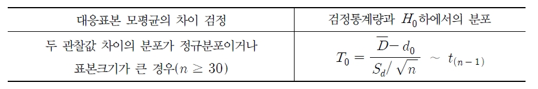
다음 자료는 지난 \(20\)일 동안에 한 극장내의 \(A\)매표소와 \(B\)매표소의 영화 관람권 판매수이다. 두 매표소간의 평균 판매 수에 차이가 있는지 유의수준 \(5\%\)에서 검정하라.
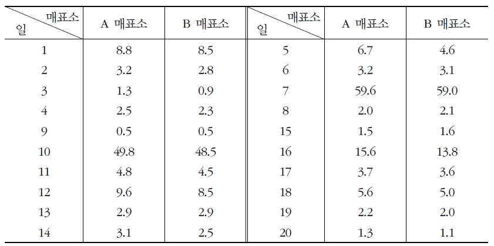
(풀이)
귀무가설과 대립가설 설정: \(H_0 : \Delta=0, \hskip5pt vs. \hskip5pt H_1 : \Delta\ne 0\)
유의수준 설정: \(\alpha=0.05\)
기각역을 설정: \(t_{(0.025,19)}=2.093\), \(-t_{(0.025,19)}=-2.093\)
기각영역: \(T\ge 2.093\) 또는 \(T\le -2.093\)
검정통계량값 계산: \(d_i=x_i-y_i\)라면 \(\bar{d}=0.505\), \(s_d^2=0.378\), \(n=20\), \(t_0=\frac{0.505}{\sqrt{0.378/20}}=3.6733\)
\(t_0=3.6733\)은 기각역에 속하므로 유의수준 \(\alpha=0.05\)에서 귀무가설 \(H_0\)를 기각한다. 따라서 두 매표소의 판매 수에는 차이가 있다고 할 수 있다.
\(P\)-값 계산: \(P\)-값=\(2\times P(T\ge 3.6733)=0.0016\)
따라서 \(P\)-값\(<\alpha\)이므로 귀무가설 \(H_0\)를 기각한다.
10.4 단일 모비율의 검정
\(n\)회의 이항 시행 중 성공 횟수를 \(X\)라고 하면 모비율 \(p\)의 추정량은 통계량 \(\hat{p}=X/n\)로 주어짐
\(n\)이 클 경우(보통 \(n\times min(\hat{p},1-\hat{p})\ge 5\)를 만족하는 경우 중심극한정리에 의해서 \(\hat{p}\)은 평균은 \(\mu_{\hat{p}}=p\)이고 분산은 \(\sigma_{\hat{p}}^2=p(1-p)/n\)인 정규분포를 근사적으로 따르게 됨. 따라서 \(H_0 : p=p_0\)를 검정할 때의 검정통계량은 다음과 같음 \[Z_0=\frac{\hat{p}-p_0}{\sqrt{\frac{p_0(1-p_0)}{n}}}\] 여기서 검정통계량은 귀무가설 하에서 계산되므로 \(\sigma_{\hat{p}}^2=p_0(1-p_0)/n\)임
유의수준 \(\alpha\)에서 양측검정의 기각역은 \(Z\le -z_{\alpha/2}\) 또는 \(Z\ge z_{\alpha/2}\)가 되고, 대립가설이 \(p<p_0\)일 때의 기각역은 \(Z\le-z_{\alpha}\), 대립가설이 \(p>p_0\)일 때의 기각역은 \(Z\ge z_{\alpha}\)가 됨
\(n\)이 작은 경우 \(X=n\hat{p}\)은 \(b(n,p_0)\)인 이산형 확률변수이므로 특정한 \(\alpha\)값과 일치하는 기각역을 설정하기는 쉬운 일이 아님
이럴 경우엔 \(P\)-값을 이용하는 것이 좋음. 즉, 다음의 가설 \(H_0 : p=p_0 \hskip5pt vs. \hskip5pt H_1 : p<p_0\)를 유의수준 \(\alpha\)에서 검정할 때에는 다음과 같이 이항분포를 이용하여 \(P\)-값을 구함 \[P\text{- 값}=P(X\le x | p=p_0)=\sum_{k=0}^x \binom{n}{k}p_0^k (1-p_0)^{n-k}\] 여기서 \(x\)는 표본크기 \(n\)인 표본에서의 성공 횟수임. \(P\)-값이 \(\alpha\)보다 같거나 작으면 \(H_0\)를 기각함
마찬가지 방법으로 다음의 가설 \(H_0 : p=p_0 \hskip5pt vs. \hskip5pt H_1 : p>p_0\)를 검정할 때의 \(P\)-값을 구해 보면 다음과 같음 \[P\text{- 값}=P(X\ge x | p=p_0)=1-\sum_{k=0}^{x-1} \binom{n}{k}p_0^k (1-p_0)^{n-k}\]
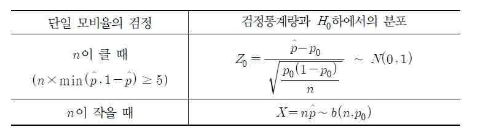
어떤 기계는 \(30\%\)의 불량품을 생산한다. 기계를 수선한 후에 \(100\)개를 생산하였더니 \(23\)개의 불량품이 나왔다. 수선한 후에 제품의 불량률이 감소되었는가의 여부에 대해 유의수준 \(5\%\)에서 가설검정을 실시하라.
(풀이)
귀무가설과 대립가설 설정: \(H_0 : p=0.3, \hskip5pt vs. \hskip5pt H_1 : p<0.3\)
유의수준 설정: \(\alpha=0.05\)
기각역을 설정: \(-z_{0.05}=-1.645\)
기각영역: \(Z\le -1.645\)
검정통계량값 계산: \(\hat{p}=23/100=0.23\), \(p_0=0.3\), \(z_0=\frac{0.23-0.3}{\sqrt{0.3\cdot 0.7/100}}=-1.528\)
\(z_0=-1.528\)은 기각역에 속하지 않으므로 유의수준 \(\alpha=0.05\)에서 귀무가설 \(H_0\)를 기각할 수 없다. 따라서 수선한 후에 제품의 불량률이 감소되었다고 할 수 없다.
\(P\)-값 계산: \(P\)-값=\(P(Z\ge -1.528)=0.0633\)
따라서 \(P\)-값\(>\alpha\)이므로 귀무가설 \(H_0\)를 기각할 수 없다.
10.5 두 모비율 차의 검정
서로 독립인 두 확률변수 \(X\)와 \(Y\)가 각각 이항분포 \(b(n_1,p_1)\)과 \(b(n_2,p_2)\)를 따른다고 하면 두 비율 추정량의 차이 \(\hat{p}_1-\hat{p}_2=X/n_1-Y/n_2\)는 표본크기가 충분히 큰 경우 다음과 같은 평균과 분산을 갖는 정규분포를 근사적으로 따르게 됨 \[E(\hat{p}_1-\hat{p}_2)=p_1-p_2\] \[Var(\hat{p}_1-\hat{p}_2)=\frac{p_1(1-p_1)}{n_1}+\frac{p_2(1-p_2)}{n_2}\]
따라서 다음의 확률변수 \(Z\)는 표준정규분포를 따르게 됨 \[Z=\frac{(\hat{p}_1-\hat{p}_2)-(p_1-p_2)}{\sqrt{p_1(1-p_1)/n_1+p_2(1-p_2)/n_2}}\]
두 모비율 차이를 검정할 때는 일반적으로 "이항 모수가 서로 같다"(즉, \(H_0 : p_1=p_2\))라는 귀무가설을 검정하게 되고 이는 \(p_1=p_2=p\)라는 의미이므로 표준정규분포를 따르는 확률변수를 이용하면 검정통계량은 다음과 같음 \[Z_0=\frac{\hat{p}_1-\hat{p}_2}{\sqrt{p(1-p)[1/n_1+1/n_2]}}\]
위의 식을 계산하려면 분모의 제곱근 안에 있는 모수 \(p\)를 추정해야 하는데 귀무가설 하에서 계산되므로 이에 대한 추정값은 두 비율이 같다는 전제 하에 다음과 같이 두 표본자료를 이용하여 합동비율을 계산함 \[\hat{p}=\frac{X+Y}{n_1+n_2}\] 여기서 \(X\)와 \(Y\)는 각각 두 표본의 성공횟수임
\(\hat{p}\)을 대입하여 검정통계량을 정리하면 \[Z_0=\frac{\hat{p}_1-\hat{p}_2}{\sqrt{\hat{p}(1-\hat{p})[1/n_1+1/n_2]}}\] 이 되므로 대립가설에 따른 기각역을 다음과 같은 3가지 경우로 구할 수 있음
\(H_1 : p_1 > p_2\) 이면 \(Z\ge z_{\alpha}\)
\(H_1 : p_1 < p_2\) 이면 \(Z\le -z_{\alpha}\)
\(H_1 : p_1 \ne p_2\) 이면 \(Z\ge z_{\alpha}\) 또는 \(Z\le -z_{\alpha}\)
단, 표본비율의 차이가 정규분포를 따르기 위해서는 표본 수 \(n_1\), \(n_2\)가 충분히 커야하고 표본비율이 \(0\) 또는 \(1\)에 너무 가까우면 정규분포에 근사하지 않음
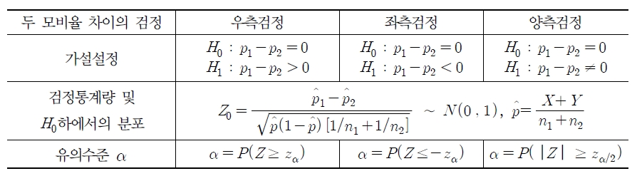
\(A\) 자동차 회사에서 생산하는 \(100\)대의 자동차를 표본으로 추출하여 시험한 결과 \(28\)대가 \(10\)만 마일 전에 엔진 수리를 필요로 하였다. 한편 \(B\) 자동차 회사에서 생산하는 \(150\)대의 자동차를 독립적으로 추출하여 시험한 결과 \(48\)대가 \(10\)만 마일 전에 엔진 수리를 필요로 하였다. 두 모비율에 차이가 있는 지를 유의수준 \(1\%\)에서 검정하라.(\(1\): \(A\) 자동차 회사, \(2\): \(B\) 자동차 회사)
(풀이)
귀무가설과 대립가설 설정: \(H_0 : p_1=p_2, \hskip5pt vs. \hskip5pt H_1 : p_1\ne p_2\)
유의수준 설정: \(\alpha=0.01\)
기각역을 설정: \(z_{0.005}=2.575\), \(-z_{0.005}=-2.575\)
기각영역: \(Z\ge 2.575\) 또는 \(Z\le -2.575\)
검정통계량값 계산: \(\hat{p_1}=0.28\), \(\hat{p_2}=0.32\) \(\hat{p}=0.304\), \(z_0=\frac{0.28-0.32}{0.304\cdot 0.696\sqrt{1/100+1/150}}=-0.68\)
\(z_0=-0.68\)은 기각역에 속하지 않으므로 유의수준 \(\alpha=0.01\)에서 귀무가설 \(H_0\)를 기각할 수 없다.
\(P\)-값 계산: \(P\)-값=\(2\times P(Z\ge -0.68)=0.5\)
따라서 \(P\)-값\(>\alpha\)이므로 귀무가설 \(H_0\)를 기각할 수 없다.
10.6 단일 모분산의 검정
정규모집단 \(N(\mu, \sigma^2)\)으로부터 추출된 크기가 \(n\)인 확률표본 \(X_1, \ldots, X_n\)의 표본분산을 \(S^2=\frac{1}{n-1}\sum_{i=1}^n(X_i-\bar{X})^2\)이라 하면 통계량 \(\frac{(n-1)S^2}{\sigma^2}\)은 자유도가 \(n-1\)인 \(\chi^2\)분포를 따름
귀무가설 \(H_0 : \sigma^2=\sigma_0^2\)를 검정하기 위한 통계량은 다음과 같이 정의됨 \[X_0^2=\frac{(n-1)S^2}{\sigma_0^2}\sim \chi_{(n-1)}^2\]
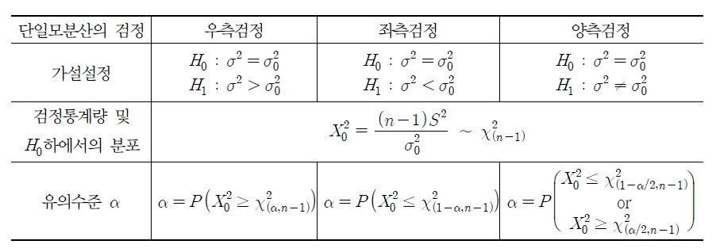
정규모집단 \(N(\mu, \sigma^2)\)에서 \(n=25\)인 표본을 추출하여 \(s^2=49\)를 얻었다. 이 모집단의 모분산을 \(55\)라고 할 수 있는지를 유의수준 \(10\%\)에서 가설검정하라.
(풀이)
귀무가설과 대립가설 설정: \(H_0 : \sigma^2=55, \hskip5pt vs. \hskip5pt H_1 : \sigma^2\ne 55\)
유의수준 설정: \(\alpha=0.1\)
기각역을 설정: \(\chi_{(0.95,24)}^2=13.85\), \(\chi_{(0.05,24)}^2=36.42\)
기각영역: \(X_0^2\le 13.85\) 또는 \(X_0^2\ge 36.42\)
검정통계량값 계산: \(n=25\), \(s^2=49\), \(x_0^2=\frac{(25-1)49}{55}=21.3818\)
\(x_0^2=21.3818\)은 기각역에 속하지 않으므로 유의수준 \(\alpha=0.1\)에서 귀무가설 \(H_0\)를 기각할 수 없다. 따라서 유의수준 \(10\%\)에서 모분산은 \(55\)라고 할 수 있다.
\(P\)-값 계산: 검정통계량의 값 \(21.3818\)은 중심에서 좌측영역에 위치하므로 \(P\)-값=\(2\times P(X^2\le 21.3818)=0.7678\)이다.
따라서 \(P\)-값\(>\alpha\)이므로 귀무가설 \(H_0\)를 기각할 수 없다.
10.7 두 모분산 비의 검정
정규분포를 따르는 상호 독립인 두 모집단 \(N(\mu_1, \sigma_1^2)\), \(N(\mu_2,\sigma_2^2)\)으로부터의 표본크기가 \(n_1\)과 \(n_2\)인 확률표본을 각각 \(X_1, \ldots, X_{n_1}\)과 \(Y_1, \ldots, Y_{n_2}\)라고 할 때 이에 대한 표본분산을 각각 \(S_1^2=\frac{1}{n_1-1}\sum_{i=1}^{n_1}(X_i-\bar{X})^2\), \(S_2^2=\frac{1}{n_2-1}\sum_{i=1}^{n_2}(Y_i-\bar{Y})^2\)이라고 하자.
그러면 \(U=(n_1-1)S_1^2/\sigma_1^2\)와 \(V=(n_2-1)S_2^2/\sigma_2^2\)은 각각 자유도가 \(n_1-1\), \(n_2-1\)인 \(\chi^2\)분포를 따르고 \(F\)분포의 정의에 의해 다음이 성립함 \[F=\frac{U/(n_1-1)}{v/(n_2-1)}=\frac{S_1^2/\sigma_1^2}{S_2^2/\sigma_2^2}\sim F_{n_1-1,n_2-1}\]
귀무가설을 \(H_0 : \sigma_1^2/\sigma_2^2=1\)(즉, \(\sigma_1^2=\sigma_2^2\))이라고 정의하면 \(H_0\)하에서의 검정통계량 \(F_0\)는 다음과 같음 \[F_0=\frac{S_1^2}{S_2^2}\sim F_{n_1-1,n_2-1}\]
따라서 유의수준 \(\alpha\)하에서 \(\sigma_1^2\)과 \(\sigma_2^2\)의 동일성 여부에 대한 가설검정 절차를 요약하면 다음과 같음
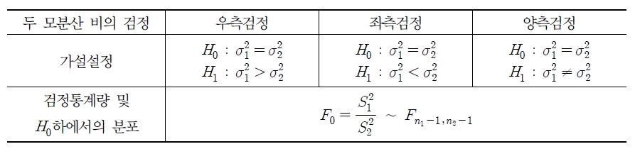
두 모분산 비의 검정에서 유의수준 \(\alpha\)는 우측검정의 경우는 \(\alpha=P(F_0\ge F_{(\alpha,n_1-1,n_2-1)})\)이고 좌측검정의 경우는 \(\alpha=P(F_0\le F_{(1-\alpha,n_1-1,n_2-1)})\)임
여기서 \(F_{(1-\alpha,n_1-1,n_2-1)}=(F_{(\alpha,n_2-1,n_1-1)})^{-1}\)이므로 좌측검정의 유의수준 \(\alpha\)는 \(\alpha=P(F_0\le (F_{(\alpha,n_2-1,n_1-1)})^{-1})\)과 같음
양측검정의 경우는 \(\alpha=P(F_0\ge F_{(\alpha/2,n_1-1,n_2-1)}) \hskip5pt \text{또는} \hskip5pt F_0\le (F_{(\alpha/2,n_2-1,n_1-1)})^{-1}\)
\(12\)세의 남아와 여아 중에서 남아 \(25\)명, 여아 \(23\)명을 단순무작위 추출하여 폐활량을 조사한 결과, 남아의 분산은 \(0.145\), 여아의 분산은 \(0.0942\)였다.(남녀 폐활량은 정규분포를 따른다고 가정) 두 모집단의 분산이 같은 지를 유의수준 \(5\%\)에서 검정하라.(단, \(1\): 남아, \(2\): 여아)
(풀이)
귀무가설과 대립가설 설정: \(H_0 : \sigma_1^2=\sigma_2^2, \hskip5pt vs. \hskip5pt H_1 : \sigma_1^2\ne \sigma_2^2\)
유의수준 설정: \(\alpha=0.05\)
기각역을 설정: \(F_{(0.025,24,22)}=2.3315\), \((F_{(0.025,22,24)})^{-1}=0.4356\)
기각영역: \(F_0\ge 2.3315\) 또는 \(F_0\le 0.4356\)
검정통계량값 계산: \(s_1^2=0.145\), \(s_2^2=0.0942\), \(f_0=\frac{0.145}{0.0942}=1.5393\)
\(f_0=1.5393\)은 기각역에 속하지 않으므로 유의수준 \(\alpha=0.05\)에서 귀무가설 \(H_0\)를 기각할 수 없다. 따라서 유의수준 \(5\%\)에서 두 모집단의 분산은 같다고 할 수 있다.
\(P\)-값 계산: 검정통계량의 값 \(1.5393\)은 중심에서 우측영역에 위치하므로 \(P\)-값=\(2\times P(F\ge 1.5393)=0.3219\)이다.
따라서 \(P\)-값\(>\alpha\)이므로 귀무가설 \(H_0\)를 기각할 수 없다.